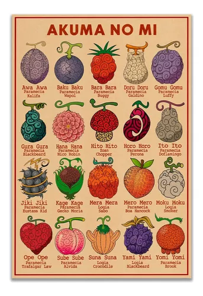
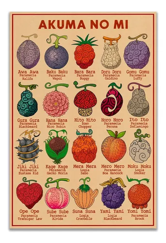

Para poder entender algunos términos y objetos que aparecen a lo largo del anime es necesario tener contexto acerca de estos, por ello se recopiló los principales elementos argumentativos.
El Gobierno Mundial es una organización política que abarca la mayor parte del mundo, está dirigida por los Cinco Ancianos quienes en realidad responden ante un gobernante que permanece en la clandestinidad, conocido simplemente como Imu, cuya existencia dentro del Gobierno Mundial no es conocida por el mundo en general. Ésta entidad se estableció hace ochocientos años tras el fin del Siglo Vacío.
El Gobierno Mundial tiene una estructura jerárquica muy compleja y hay que distinguir dos partes. La primera es la organización central llamada "Gobierno Mundial", que fue fundada hace ochocientos años por los veinte reyes tras la aniquilación de un Gran Reino, y en segundo lugar los más de 170 estados aliados miembros que se unieron bajo el Gobierno del Mundo, pero en sus propias formas de gobierno, en gran medida independiente. Cada uno tiene sus propios líderes, su caja de nobleza, y sus ejércitos que, sin embargo, aprobaron las leyes del gobierno que los líderes del mundo impusieron.
Los líderes de los Estados del Consejo llamados los "Reyes" vienen cada cuatro años en Mary Geoise para una conferencia mundial en conjunto, conocida como Levely. El impacto exacto se desconoce, pero se supone que tiene más influencia que la de todos los aristócratas del mundo.
En consecuencia, el gobierno del mundo, tanto feudales, demócratas y dictatoriales, entran en un régimen totalitario como la "paz mundial" bajo la que su gobierno aspira. Ellos actúan estrictamente de acuerdo con el lema de "Justicia Absoluta" y la moral y la ética en la parte trasera. El Gobierno Mundial también determina quién es criminal y ofrece una recompensa en forma de cartel de búsqueda.
La Marina es la fuerza militar marítima al servicio del Gobierno Mundial encargada de la aplicación de la ley, la seguridad internacional y las maniobras militares. La Marina es uno de los Tres Grandes Poderes junto con los Siete Señores de la Guerra del Mar y los Cuatro Emperadores.Están presentes en todos los mares del mundo, ya que tienen sedes en todos ellos. Aunque el foco de sus acciones se encuentra en Grand Line, el mar más peligroso.A raíz de la Guerra en la Cumbre de Marineford, la base de operaciones del cuartel general de la Marina fue trasladado al Nuevo Mundo. El deber de la Marina es el de mantener la ley y el orden en todo el mundo e imponer la voluntad del Gobierno Mundial. Por lo tanto, se considera la clave del desarrollo estratégico de la fuerza del Gobierno en el mundo y se espera que obedezca sus órdenes a voluntad.
A veces, estas órdenes son cuestionables, sin embargo, se espera que las lleven a cabo con independencia de opinión. Entre sus funciones está la adjudicación de recompensas a los piratas que sobresalgan y necesiten ser eliminados pronto.Los «cazarrecompensas» son en parte «aceptados» por la Marina para hacer el trabajo mucho más fácil, pero no es seguro que vayan siempre a favor de ésta.
Los infantes de Marina suelen trabajar en parejas con un oficial superior y un segundo en el mando o de subordinación que es de poco bajo rango. Estas asociaciones pueden permanecer incluso durante las promociones con los dos pares al progresar en el rango juntos.
Los Siete Señores de la Guerra del Mar es una organización de siete piratas que fueron convertidos en servidores del Gobierno Mundial. A pesar de que trabajan para el Gobierno Mundial, no se preocupan por respetar al Gobierno (excluyendo Bartholomew Kuma, que fue modificado haciéndolo completamente obediente) o incluso a otro Señor de la Guerra del Mar, y son a menudo considerados por los marines como cualquier pirata ordinario. Por otro lado, se les conoce como "los perros del gobierno" y son despreciados por otros piratas, pero temidos y respetados por su infame reputación y fuerza, e incluso después de convertirse en uno de los Siete Señores de la Guerra del Mar.
Los Siete Señores de la Guerra del Mar parecen ser una mezcla de los problemáticos Cuatro Emperadores y los más ordenados marines. La mayoría de los Señores de la Guerra del Mar se componen de veteranos del Nuevo Mundo, los que se han reunido con alguno de los Cuatro Emperadores o incluso enfrentado con ellos.
No suelen ser aliados y tampoco son estrictamente enemigos unos de otros. Más bien, los cuatro prefieren ir por libre la mayor parte del tiempo.En comparación con los individuos y grupos antagónicos a los que los Piratas de Sombrero de Paja se han enfrentado anteriormente, los Emperadores son una amenaza mucho mayor durante la segunda mitad. En la gran Batalla de Marineford, Barbablanca, uno de los Cuatro Emperadores, conoció su final en el clímax de la guerra. Barbanegra, su asesino, usurpó su posición como Emperador. Shanks, otro de los Cuatro Emperadores, hizo el alto el fuego para acabar con la embravecida batalla.
 

Las Frutas del Diablo son un tipo de frutas que, si se ingieren, conceden habilidades sobrehumanas a quien las consuma, aunque con la consecuencia de no poder nadar, debido a que el agua del mar les debilita. Existen tres tipos:
Brinda poderes sobrehumanos a quien haya consumido. Estos poderes tienen que ver con el cuerpo físico, manipular el medio ambiente o producir algún tipo de sustancia y resulta ser la más común de las tres.
Permite a su usuario transformarse, ya sea parcial o totalmente en un animal específico; si bien estos pueden ser animales comunes, también existen usuarios que pueden mutar en criaturas mitológicas como el fénix o en animales prehistóricos como dinosaurios.
Otorga al usuario habilidades «capaces de transformar su cuerpo en el elemento al que la fruta representa», haciéndolo inmune a ataques físicos, es el tipo de fruta más poderosa entre las tres, pero este tipo de fruta puede ser contrarrestada por usuarios de haki de armadura.
Dentro de la historia, los personajes consideran estas frutas las encarnaciones mismas del Demonio del Mar y que, por ende, los usuarios de las Frutas son incapaces de nadar o de permanecer un tiempo prolongado en el agua de mar, puesto que «el océano los odia». El kairōseki tiene el mismo efecto. Cuando un usuario está parcialmente sumergido en agua marina, esta anula todo su poder y coordinación, aunque en ciertos casos la habilidad aún se mantiene activa, como en el caso de Luffy, que es capaz de estirarse a pesar de estar totalmente bajo el agua. Sin embargo, el agua dulce no tiene igual efecto, como el caso del agua de la lluvia o los ríos
Los Poneglyphs son bloques de roca indestructibles dispersos por Grand Line y escritos en una lengua extinta que cuentan una parte de los acontecimientos transcurridos durante el Siglo Vacío. El conjunto de todos estos acontecimientos se conoce como la verdadera historia. Fueron esculpidos hace 800 años en el País de Wano por un clan de maestros canteros, la Familia Kozuki. Entre la información que aportan los Poneglyphs se incluye la mención de las tres Armas Ancestrales: Pluton, Poseidon y Urano. También existen algunos Poneglyphs que sólo sirven para averiguar la localización de otros Poneglyphs que sí que cuentan parte de la verdadera historia.
Debido al contenido de estos Poneglyphs, el Gobierno Mundial ha decretado un crimen intentar estudiarlos, excusando el hecho de querer revivir las Armas Ancestrales que podrían destruir el mundo. Por ello, muchos eruditos fueron encarcelados y asesinados para evitar la propagación de la información contenida en estas rocas. Ohara poseía la mayor cantidad de eruditos capaces de leer estas runas, debido a esto fueron eliminados, incluyendo sus demás habitantes para evitar gente infiltrada entre ellos, además de destruir la isla por completo. Actualmente solo Nico Robin puede ser capaz de leer el contenido de estos, por ello, inicialmente le fue impuesta una recompensa de 79 millones por su cabeza. En la actualidad, ella sigue siendo perseguida por el Gobierno Mundial, e intentando descubrir la historia ocurrida durante el Siglo Vacío.
Copyright 2024.One Piece. Todos los derechos reservados